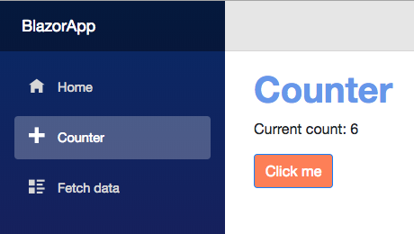

Getting Started
If you haven't done so, please install Bionic first.
Create a Blazor project
First, create a Blazor Standalone or Hosted project using Blazor Templates.
You can check for the available templates using:
> dotnet new -l
Among others, the following templates should be available:
Templates Short Name Language Tags ------------------------------------------------------------------------------------------------------------------------------- Blazor (hosted in ASP.NET server) blazorhosted [C#] Web/Blazor/Hosted Blazor Library blazorlib [C#] Web/Blazor/Library Blazor (Server-side in ASP.NET Core) blazorserverside [C#] Web/Blazor/ServerSide Blazor (standalone) blazor [C#] Web/Blazor/Standalone
If the above templates are not available, then install them using:
> dotnet new -i Microsoft.AspNetCore.Blazor.Templates
Create and build a Blazor Standalone project:
> dotnet new blazor -o BlazorApp > cd BlazorApp > dotnet run ... Now listening on: http://localhost:5000 Now listening on: https://localhost:5001 Application started. Press Ctrl+C to shut down.
Finally, point your browser to http://localhost:5000 and verify that the app is running.
You can shut down the server once you've verified that it is working.
Initializing Bionic
Before we can do anything else with Bionic, we need to first initialize our project with it. This step is only required once per project.
> bionic start
Serving Bionic for the first time
You can now build and serve your project. This command will also rebuild whenever a source code or scss change is detected.
> bionic serve
Please note that it will not hot-reload the page for you. You'll have to keep an eye on the server and reload when compilation has completed.
Bionic is your friend
Bionic command line can help you. You can continue to add --help to longer commands for contextual help.
bionic --help
Generating Services (AKA Providers) for your project
Services require both an interface and its implementation. In addition, they also need to be registered with the Dependency Injection service before being used. With Bionic, the [Injectable] attribute is used to inject the service automatically minimizing the amount of changes required.
Let's start by creating a new CounterService for the project:
bionic generate service CounterService 🚀 Generating a service named CounterService The template "Bionic Service Template" was created successfully.
This will create:
Services/Interfaces/ICounterService.cs Services/CounterService.cs
Open the created files using your favorite editor or IDE.
Update your ICounterService interface to look like:
public interface ICounterService { int count {get; set;} void Increment(); }
And your CounterService implementation to look like:
using BionicExtensions.Attributes; [Injectable(typeof(ICounterService))] public class CounterService : ICounterService { public int count {get; set;} = 0; public void Increment() => count++; }
Generating a new Component
Pages, Layouts, Components and Services can also be generated through an interactive CLI process:
> bionic bionic -g What would you like to generate? (component, layout, page or service/provider): component How would you like to name your component? CounterComponent 🚀 Generating a component named CounterComponent The template "Bionic Component Template" was created successfully.
This will create:
Component/ CounterComponent.cshtml CounterComponent.scss
Let's implements the CounterComponent.cshtml to be:
@using Microsoft.AspNetCore.Blazor.Components @inject ICounterService CounterService; <div component="CounterComponent"> <h1>Counter</h1> <p>Current count: @CounterService.count</p> <button class="btn btn-primary" onclick="@CounterService.Increment">Click me</button> </div> @functions { // Add your component functions here }
And update your CounterComponent.scss to:
div[component="CounterComponent"] { h1 { font-weight: bold; color: cornflowerblue; } button { background-color: coral; } }
Now edit you Pages/Counter.cshtml page and set it to:
@page "/counter" <CounterComponent /> @functions { }
Let bionic serve complete the build and then refresh your browser to contemplate the final result.

You can now pick and choose where else you would like to deploy your app: